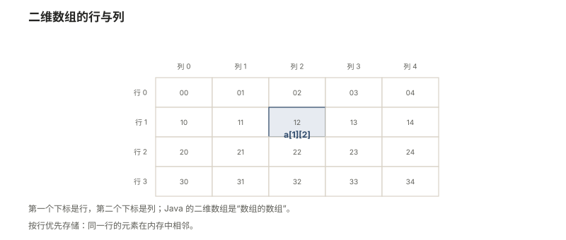

SOE102 · 第 3 章
数组、输入与控制流
Arrays, Input & Control Flows
虚线下划线为术语；悬停查看中文、英文与释义，完整词典见“术语”。
本章目录
本章把“存一组值、读入用户输入、选择执行路径”三件事放在一起：数组的创建与索引、Scanner 的读取与校验、while / do-while / for 三种循环，以及嵌套循环中的 break 与 continue。
本章要点
- 数组用
类型[] 名字声明，索引从 0 开始，最后一个索引是 length − 1。 array.length是字段而不是方法，用来代替硬编码的数组长度。- Scanner 的
nextInt()读取整数；读入后必须先校验范围，再访问数组。 - while 在每次迭代前检查条件，条件一开始就为假则循环体一次都不执行。
- do-while 先执行循环体再判断，因此至少执行一次，适合反复索要合法输入。
- for 把初始化、条件、更新写在一行；增强 for 只遍历值，不提供索引。
- 二维数组是“数组的数组”，嵌套循环的外层走行、内层走列。
- break 结束当前循环，continue 跳过本次剩余语句直接进入下一次迭代。
3.1 数组：创建、索引与 length
数组用来把一组同类型的值存在一起。声明时类型后面加方括号：String[] team 表示一个存放 String 的数组，int[] scores 表示一个存放整数的数组。创建时可以直接给出元素（数组初始化器），也可以只给出长度让 Java 填入默认值。
String[] team = {"Pikachu", "Charmander", "Squirtle", "Bulbasaur"};
System.out.println("Team size: " + team.length);
System.out.println("Before: " + team[1]);
team[1] = "Eevee";
System.out.println("After: " + team[1]);
System.out.println("First: " + team[0]);
System.out.println("Last: " + team[team.length - 1]);这段程序输出 Team size: 4、Before: Charmander、After: Eevee、First: Pikachu、Last: Bulbasaur。要看清三件事：索引index从 0 开始，所以 team[1] 是第二个元素；team.length 给出元素个数；给 team[1] 赋值只是替换了这个槽位里的引用，并没有修改原来那个 String 对象的文本——这与 String 不可变是一致的。
Lab 提出的检验问题是：“改变一个元素会改变数组的长度吗？”答案是不会。数组一经创建长度固定，能变的只是每个槽位里存的值。最后一个元素的索引永远是 length - 1，写 team[team.length] 就会越界。
W3 Lab p.1
3.2 Scanner 输入与边界检查
从控制台读入要用 Scanner。Lab 要求读入一个 1 到 10 之间的分数槽位数量，超范围就打印提示且不创建数组；再问要更新哪个索引，越界就提示；最后读分数并要求 0 到 100。整个流程的关键是“先校验、后访问”。
Scanner input = new Scanner(System.in);
System.out.print("Number of score slots (1-10): ");
int size = input.nextInt();
if (size < 1 || size > 10) {
System.out.println("Size must be from 1 to 10.");
} else {
int[] scores = new int[size];
System.out.println("Array length: " + scores.length);
System.out.println("Initial first score: " + scores[0]);
}两个细节值得注意。第一，new int[size] 里的 size 是运行时才确定的变量，Java 允许用变量指定数组长度；新建的 int 数组每个元素默认是 0，所以“初始第一个分数”打印 0。第二，判断越界要用 index < 0 || index >= scores.length，其中 >= 不能写成 >——索引等于长度时已经越界。
Lab 还要求测试四种情况：合法更新、size 为 0、index 等于 length、score 为 101。这四种正好覆盖“边界值”的典型考法：合法路径一次，下边界与上边界各一次，再加一次明显越界。
W3 Lab p.2
3.3 while：先判断后执行
while 循环while loop在每次迭代之前检查条件，条件为真才执行循环体。Lab 的例子是皮卡丘的能量倒计时：初始 3 点能量，每轮先打印当前能量再减 1，只要能量大于 0 就继续，结束后打印 Time to rest.。
int energy = 3;
while (energy > 0) {
System.out.println("Energy: " + energy);
energy--;
}
System.out.println("Time to rest.");输出是三行 Energy: 3、Energy: 2、Energy: 1，最后一行 Time to rest.。把初始能量改成 0 再运行，循环体一次都不会执行，只会打印 Time to rest.——这正是 while“先判断”的直接后果。
Lab 的检验问题是：“如果把更新语句去掉会怎样？”答案是不再更新条件里的变量，energy 永远是 3，条件永远为真，循环永不结束，形成死循环。写循环时必须确认三件事：条件里的变量有初值、循环体内会改变它、改变的方向最终能让条件变假。
W3 Lab p.2
3.4 do-while：至少执行一次
do-while 循环do-while loop把判断放在循环体之后，所以循环体至少执行一次。它最适合“必须先问一次，再根据答案决定要不要再问”的场景，例如菜单选择与输入校验。
String[] starters = {"Pikachu", "Charmander", "Squirtle"};
int choice;
do {
System.out.print("Choose a starter (1=Pikachu, 2=Charmander, 3=Squirtle): ");
choice = input.nextInt();
if (choice < 1 || choice > 3) {
System.out.println("Invalid choice.");
}
} while (choice < 1 || choice > 3);
System.out.println("You chose " + starters[choice - 1] + ".");输入 0 时打印 Invalid choice. 并再次询问；输入 3 时跳出循环，输出 You chose Squirtle.。Lab 在这里给了一个非常实用的提示：菜单用 1 到 3 编号，而数组用 0 到 2 索引，所以取值时要写 starters[choice - 1]。这个“菜单编号与索引差一”的换算在实际项目里到处出现。
与 while 的差别可以用一句话记住：while 先看条件，可能一次都不做；do-while 先做一次，再看条件。选择哪一种，取决于“第一次是否必须执行”。输入校验天然是 do-while，因为无论如何都要先问一次。
W3 Lab p.2–3
3.5 for 与增强 for
传统的 for 循环for loop把三件事写在一行：初始化、条件、更新。它最适合“已知要遍历多少个元素”的场合，尤其是按下标访问数组。
int[] scores = {60, 75, 80, 90};
int total = 0;
for (int i = 0; i < scores.length; i++) {
scores[i] = scores[i] + 5;
System.out.println("scores[" + i + "] = " + scores[i]);
total = total + scores[i];
}
System.out.println("Total: " + total);这段程序把每个元素加 5，依次输出 65、80、85、95，最后 Total: 325。循环条件是 i < scores.length，Lab 专门问“为什么不能写 <=”：因为一旦 i 等于 length，scores[i] 就访问到数组之外，抛越界异常。
增强 for 循环enhanced for loop（也叫 for-each）用于“只关心值、不关心下标”的遍历：
int[] scores = {45, 80, 60, 95, 30};
int count = 0;
for (int score : scores) {
System.out.println("Score: " + score);
if (score >= 60) {
count++;
}
}
System.out.println("Scores at least 60: " + count);输出 5 行分数，最后 Scores at least 60: 3。for (int score : scores) 读作“对 scores 里的每一个 int，命名为 score”。Lab 的检验问题是：在循环里写 score = 100; 会改变数组元素吗？不会——score 只是本轮取出的一个副本，改它不影响原数组；要修改元素必须用带下标的普通 for。
W3 Lab p.3
3.6 嵌套循环与二维数组
二维数组two-dimensional array是“数组的数组”。new int[3][4] 表示 3 行 4 列：第一个方括号是行数，第二个是列数。Lab 的训练记录场景是三位教练、每人最多四次训练，行属于教练，列属于第几次尝试。
int[][] scores = new int[3][4];
for (int trainer = 0; trainer < scores.length; trainer++) {
for (int attempt = 0; attempt < scores[trainer].length; attempt++) {
System.out.print("Trainer " + (trainer + 1)
+ ", attempt " + (attempt + 1) + ": ");
scores[trainer][attempt] = input.nextInt();
}
}嵌套循环的执行顺序是：外层取一个行号，内层把这一行的所有列走完，再回到外层取下一行。计数时要注意“显示编号从 1 开始，而索引从 0 开始”，所以提示文字里写 trainer + 1。访问元素写成 scores[trainer][attempt]，第一个下标永远是行。
输出整张表也要用嵌套循环：外层逐行，内层逐列。Lab 要求同时统计每位教练“已记录分数的个数与总和”，这需要在行循环内部维护两个累加变量，并在行末打印。新建的 int 二维数组每个格子默认是 0，Lab 明确规定 0 表示“这一格没有记录”，而不是一个合法分数。

绘图提示词
Clean vector diagram of a 3 by 4 integer array drawn as a grid: three rows labelled trainer 0, trainer 1, trainer 2 and four columns labelled attempt 0 to attempt 3, every cell showing the default value 0, with the cell at row 0 column 0 highlighted and annotated scores[0][0]. Flat 2D, thin 1.5 px strokes, muted slate blue and warm grey palette, white background, English labels, no cartoon, no gradient, no shadow.
W3 Lab p.4
3.7 break 与 continue
break立刻结束当前这一层循环，执行跳到循环之后；continue跳过本次迭代剩余的语句，直接进入下一次迭代的条件判断与更新。Lab 用一张输入规则表把它们讲清楚：
| 输入 | 行为 | 用哪个控制语句 |
|---|---|---|
| 1 到 100 | 存入当前格子 | 无，正常赋值 |
| -1 | 打印 Attempt skipped.，该格保持 0 | continue |
| 0 | 打印 Trainer finished.，结束这位教练的所有尝试 | break |
| 其他整数 | 打印 Invalid score; attempt skipped.，该格保持 0 | continue |
讲义特别强调：跳过或无效的输入仍然占用当前这次尝试，不要为同一格再次索要输入。也就是说 continue 之后，内层循环的 attempt++ 照常执行，程序自然移动到下一格。这里用的是不带标签的 break 与 continue，因此它们只影响内层循环——输入 0 只结束这位教练的尝试，外层继续处理下一位教练。
Lab 留了三个追问，都指向同一件事：continue 之后执行的是内层 for 的更新语句与条件判断，不是循环体开头；而 0 不能区分“跳过”“无效”和“从未到达”，因为三种情况留下的都是默认值 0。若 0 本身要作为合法分数，就必须换一种方式表示“未使用”，例如改用 Integer 数组让空格为 null，或另开一个布尔数组记录是否填写。
W3 Lab p.4–5
3.8 分支与控制流全景（含资料缺口）
本周标题是 Arrays, Input and Control Flows，讲义首页给了一段“代码—追踪”对照，用来说明分支是怎样被一步步执行的：源码是 int x = 3; 之后跟 if (x > 0)，右侧追踪表记录 state（x = 3）、test（true）、next（x = 4）。也就是说，判断一个 if 是否进入，要先看当前状态里变量的值，再求条件表达式的真假，最后决定下一行去哪里。
Week 4 开头对 Week 3 的回顾把控制流与循环并列列出：用布尔条件选择路径的工具是 if / else 与 switch，逻辑运算符是 &&、||、!；重复执行靠 while、do-while、for 与增强 for；改变循环走向用 break（退出）与 continue（跳过）。这份回顾可以作为本周的骨架。
| 工具 | 用途 | 关键提醒 |
|---|---|---|
| if / else | 按布尔条件选择一条路径 | 条件必须是 boolean，不能写数字 |
| switch | 按离散取值分支 | 讲义仅列为回顾项，未展开语法 |
| while | 先判断，可能 0 次 | 循环体要推动条件变量 |
| do-while | 先执行，至少 1 次 | 结尾有分号 |
| for / 增强 for | 计数遍历 / 只读遍历 | 增强 for 不能改数组元素 |
资料缺口：本周的讲义文件 week-3-standalone.txt 共 62 页，但除首页与“Previously”页外均为空白页，没有数组、Scanner、循环与 switch 的正文讲解、语法示例与页码内容。本章的数组、输入与循环细节依据同周的 Week 3 Lab 材料（Arrays, input and loops）写成；if/else 与 switch 仅依据 Week 3 首页的追踪示例与 Week 4 的回顾页，switch 的具体语法、case 穿透、逻辑运算符真值表等内容本课程资料未提供，不作展开。
W3 p.1；W4 slide 2